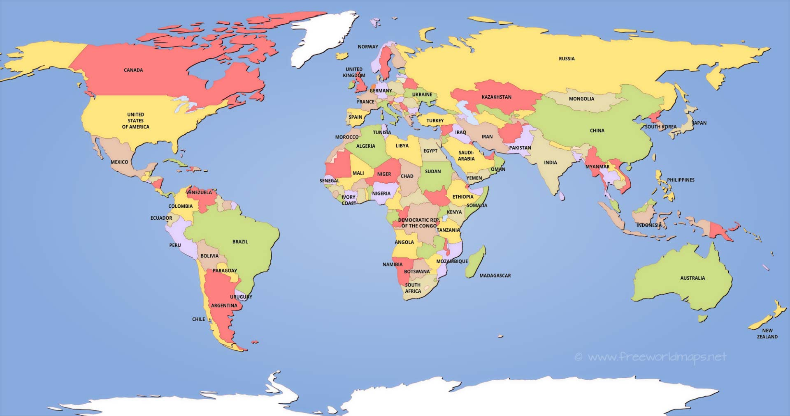

The world is so BIG, so how does Santa get around the world in one night? Well we keep track of Santa and let him know when its getting close to day time. We make sure Santa has enough time to get to all of the childern and back to the North Pole. You may think it's impossible but it's been done for centuries, because Santa was granted to internal life by the great and powerful master of magic.